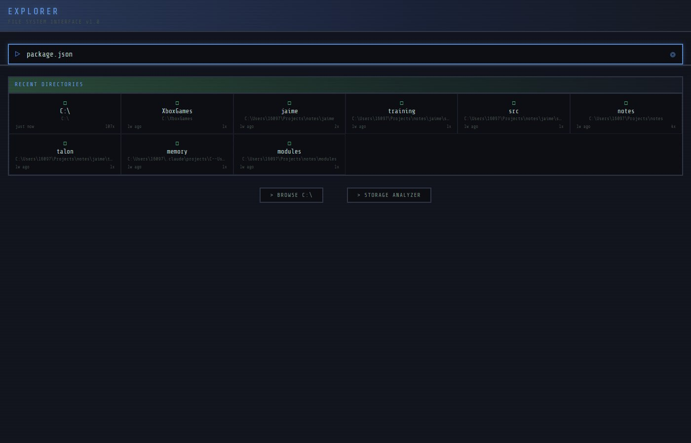

Home view — recent directories, quick search, and action buttons.
What it is
A desktop file explorer built from scratch with React and TypeScript. It indexes your entire filesystem in the background, enabling instant search across tens of thousands of files. The backend watches for file changes in real-time via WebSockets, so the index stays fresh without manual refreshes.
It's not trying to replace Windows Explorer — it's built for the way I actually use a file system: search first, browse second, with built-in viewers for the files I open most.
Key Features
- Instant file search — Background indexer crawls your filesystem and builds a searchable index of 30,000+ files. Search results appear as you type.
- Real-time file watching — Chokidar watches for filesystem changes and pushes updates via WebSocket, keeping the index current without polling.
- Built-in viewers — Video player and text viewer for common file types, so you don't need to leave the app to preview files.
- Storage analyzer — Visual breakdown of disk usage by directory, helping you find what's eating your storage.
- Recent directories — Quick access to your most-used folders, tracked automatically.
- Context menus — Right-click actions for common file operations.
In Action
Home Dashboard
Recent directories with metadata, search bar, and quick navigation to Browse and Storage Analyzer.

Search
Type to search across your entire indexed filesystem. Results update as the query changes.
Architecture
The app runs as three concurrent processes in development: a Vite dev server for the React frontend, an Express + WebSocket backend for the API and file watching, and Electron for the desktop shell.
Tech deep dive
The indexer is the most interesting part. On startup, it recursively walks the user's home directory, building an in-memory index of every file with its path, size, and modification time. This initial scan indexes ~30,000 files in a few seconds. Once the scan completes, Chokidar takes over and watches for filesystem events (create, modify, delete), pushing incremental updates through the WebSocket connection to keep the frontend in sync.
Search is prefix-matched against filenames in the index, with results ranked by recency and relevance. The frontend debounces input and streams results as they arrive, so it feels instant even on large result sets.
The file browser uses breadcrumb navigation and lazy-loads directory contents from the API. The built-in video player handles common formats natively, and the text viewer supports syntax highlighting for code files.